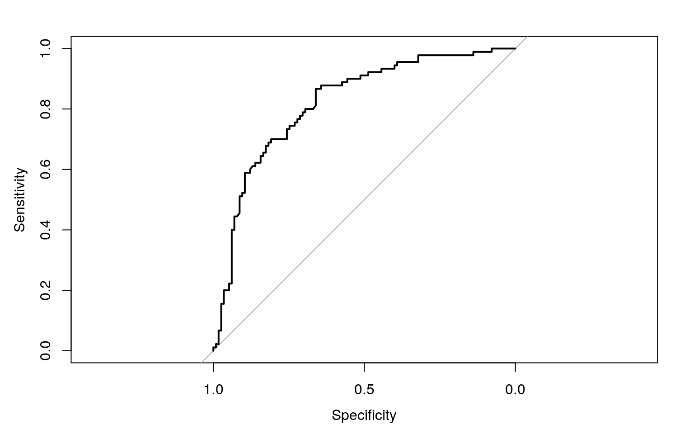

January 1, 0001
#Project 2 ##Sanica Mehta, sgm2384
The data set that I am using is survival of melanoma patients after tumor excision from the boot library. Variables include time, which is the survival time in days after surgery. Status is the status of the patients at the end of the study, 1 being they passed away from melanoma, 2 being that they were still alive, and 3 being that they passed away due to reasons unrelated to melanoma. The sex of the patients are dummy coded: 1 being male and 0 being female. the variable ulcer is also dummy coded for whether the tumor was ulcerated or not. Thickness is the thickness of the tumor in millimeters. Other variables include the patients age and the year of the operation.
#MANOVA, ANOVA, and Post-Hoc t-Tests
library(boot)
head(melanoma)## time status sex age year thickness ulcer
## 1 10 3 1 76 1972 6.76 1
## 2 30 3 1 56 1968 0.65 0
## 3 35 2 1 41 1977 1.34 0
## 4 99 3 0 71 1968 2.90 0
## 5 185 1 1 52 1965 12.08 1
## 6 204 1 1 28 1971 4.84 1man1 <- manova(cbind(time,status,sex,age,year,thickness)~ulcer,data=melanoma)
summary(man1)## Df Pillai approx F num Df den Df Pr(>F)
## ulcer 1 0.23595 10.191 6 198 8.055e-10 ***
## Residuals 203
## ---
## Signif. codes: 0 '***' 0.001 '**' 0.01 '*' 0.05 '.' 0.1
' ' 1summary.aov(man1) #6 anovas## Response time :
## Df Sum Sq Mean Sq F value Pr(>F)
## ulcer 1 18003599 18003599 15.302 0.0001249 ***
## Residuals 203 238836510 1176535
## ---
## Signif. codes: 0 '***' 0.001 '**' 0.01 '*' 0.05 '.' 0.1
' ' 1
##
## Response status :
## Df Sum Sq Mean Sq F value Pr(>F)
## ulcer 1 4.529 4.5293 16.004 8.853e-05 ***
## Residuals 203 57.451 0.2830
## ---
## Signif. codes: 0 '***' 0.001 '**' 0.01 '*' 0.05 '.' 0.1
' ' 1
##
## Response sex :
## Df Sum Sq Mean Sq F value Pr(>F)
## ulcer 1 1.370 1.37011 5.8944 0.01606 *
## Residuals 203 47.186 0.23244
## ---
## Signif. codes: 0 '***' 0.001 '**' 0.01 '*' 0.05 '.' 0.1
' ' 1
##
## Response age :
## Df Sum Sq Mean Sq F value Pr(>F)
## ulcer 1 901 901.08 3.2781 0.07169 .
## Residuals 203 55800 274.88
## ---
## Signif. codes: 0 '***' 0.001 '**' 0.01 '*' 0.05 '.' 0.1
' ' 1
##
## Response year :
## Df Sum Sq Mean Sq F value Pr(>F)
## ulcer 1 1.48 1.4849 0.223 0.6373
## Residuals 203 1351.75 6.6589
##
## Response thickness :
## Df Sum Sq Mean Sq F value Pr(>F)
## ulcer 1 321.9 321.90 44.611 2.259e-10 ***
## Residuals 203 1464.8 7.22
## ---
## Signif. codes: 0 '***' 0.001 '**' 0.01 '*' 0.05 '.' 0.1
' ' 1pairwise.t.test(melanoma$time,melanoma$ulcer, p.adj="none")##
## Pairwise comparisons using t tests with pooled SD
##
## data: melanoma$time and melanoma$ulcer
##
## 0
## 1 0.00012
##
## P value adjustment method: nonepairwise.t.test(melanoma$status,melanoma$ulcer, p.adj="none")##
## Pairwise comparisons using t tests with pooled SD
##
## data: melanoma$status and melanoma$ulcer
##
## 0
## 1 8.9e-05
##
## P value adjustment method: nonepairwise.t.test(melanoma$sex,melanoma$ulcer, p.adj="none")##
## Pairwise comparisons using t tests with pooled SD
##
## data: melanoma$sex and melanoma$ulcer
##
## 0
## 1 0.016
##
## P value adjustment method: nonepairwise.t.test(melanoma$thickness,melanoma$ulcer, p.adj="none") #4 t-tests##
## Pairwise comparisons using t tests with pooled SD
##
## data: melanoma$thickness and melanoma$ulcer
##
## 0
## 1 2.3e-10
##
## P value adjustment method: none1-(.95^11)## [1] 0.4311999.05/11## [1] 0.004545455I have done 11 hypothesis tests which means that the probability that I have made a type I error is 43.120% and the bonferroni adjusted significance level is 0.0045. There are significant differences in survival time, status, and thickness between patients who had ulcerated and non-ulcerated tumors (p-value<0.0045). The MANOVA assumptions are random samples/independent observations, multivariate normality of dependent variables, homogeneity of within-group covariance matrices, linear relationships among dependent variables, and no multicollinearity which are not likely to have been met by the data.
#Randomization Test
summary(aov(time~ulcer,data=melanoma))## Df Sum Sq Mean Sq F value Pr(>F)
## ulcer 1 18003599 18003599 15.3 0.000125 ***
## Residuals 203 238836510 1176535
## ---
## Signif. codes: 0 '***' 0.001 '**' 0.01 '*' 0.05 '.' 0.1
' ' 1obs_F<-15.3
Fs <- replicate(5000,{
new <- melanoma%>%mutate(time=sample(time))
SSW <- new %>% group_by(ulcer) %>% summarize(SSW=sum((time-mean(time))^2)) %>% summarize(sum(SSW)) %>% pull
SSB <- new %>% mutate(mean=mean(time)) %>% group_by(ulcer) %>% mutate(groupmean=mean(time)) %>%
summarize(SSB=sum((mean-groupmean)^2)) %>% summarize(sum(SSB))%>%pull
(SSB/1)/(SSW/203)
})
hist(Fs, prob=T); abline(v = obs_F, col="red",add=T)mean(Fs>obs_F) ## [1] 0The null hypothesis of the randomization test is that the ulcerated and non-ulcerated tumor patients mean survival time are equal and the alternative hypothesis is that they are not equal. The p-value is effectively zero which means none of the 5000 F statistics generated under the null hypothesis were bigger than the actual F statistic, reject the null hypothesis and conclude that the ulcerated and non-ulcerated tumor patients differ.
#Linear Regression Model
melanoma$age_c=melanoma$age-mean(melanoma$age,na.rm=T)
fit <- lm(time ~ age_c * ulcer, data=melanoma)
summary(fit)##
## Call:
## lm(formula = time ~ age_c * ulcer, data = melanoma)
##
## Residuals:
## Min 1Q Median 3Q Max
## -2511.8 -686.3 -100.7 717.0 3018.2
##
## Coefficients:
## Estimate Std. Error t value Pr(>|t|)
## (Intercept) 2389.518 97.957 24.394 < 2e-16 ***
## age_c -13.720 6.144 -2.233 0.026640 *
## ulcer -516.542 148.045 -3.489 0.000595 ***
## age_c:ulcer -9.557 8.839 -1.081 0.280885
## ---
## Signif. codes: 0 '***' 0.001 '**' 0.01 '*' 0.05 '.' 0.1
' ' 1
##
## Residual standard error: 1043 on 201 degrees of freedom
## Multiple R-squared: 0.1481, Adjusted R-squared: 0.1354
## F-statistic: 11.65 on 3 and 201 DF, p-value: 4.526e-07melanoma$ulcer<-factor(melanoma$ulcer,levels=c("1","0"))
ggplot(melanoma, aes(age,time, color=ulcer))+geom_smooth(method="lm", se=F, fullrange=T)+geom_point()+
geom_vline(xintercept=0,lty=2)+geom_vline(xintercept = mean(melanoma$age))#linearity,homoskedsaticity
resids<-fit$residuals
fitvals<-fit$fitted.values
ggplot()+geom_point(aes(fitvals,resids))+geom_hline(yintercept=0, color='red') #normality
ggplot()+geom_histogram(aes(resids), bins=20)
ggplot()+geom_qq(aes(sample=resids))+geom_qq_line(aes(sample=resids))ks.test(resids, "pnorm", mean=0, sd(resids))##
## One-sample Kolmogorov-Smirnov test
##
## data: resids
## D = 0.057823, p-value = 0.4995
## alternative hypothesis: two-sidedshapiro.test(resids)##
## Shapiro-Wilk normality test
##
## data: resids
## W = 0.99201, p-value = 0.3252coeftest(fit, vcov=vcovHC(fit))##
## t test of coefficients:
##
## Estimate Std. Error t value Pr(>|t|)
## (Intercept) 2389.5176 93.3975 25.5844 < 2.2e-16 ***
## age_c -13.7205 5.6420 -2.4318 0.015899 *
## ulcer -516.5416 155.8054 -3.3153 0.001086 **
## age_c:ulcer -9.5567 9.8868 -0.9666 0.334902
## ---
## Signif. codes: 0 '***' 0.001 '**' 0.01 '*' 0.05 '.' 0.1
' ' 1The predicted survival time when a patient is at the 52.463 age and has an ulcerated tumor is 2389.518 days. For every one-unit increase in age, survival time decreases by 13.721 days. Patients with ulcerated tumors and an average age have a predicted survival time that is 516.542 days lower than patients with non-ulcerated tumors and an average age. The slope of age on survival time for ulcerated tumor patients is 9.557 smaller than for non-ulcerated tumor patients.
My model explains 14.81% of the variation in the outcome. The assumption of homoskedsaticity was violated, normality an linearity is okay.
There were no changes to significance after using robust standard errors. Age is significantly associated with survival time and there is a significant difference between the survival time of ulcerated and non-ulcerated patients with an average age. The slope of age on survival time for non-ulcerated tumor patients is not significant.
#Linear Regression Rerun with Computing Bootstrapped Standard Errors
set.seed(348)
samp_distn<-replicate(5000, {
boot_dat<-melanoma[sample(nrow(melanoma),replace=TRUE),]
fit<-lm(time ~ age_c * ulcer, data=boot_dat)
coef(fit)
})
samp_distn %>% t %>% as.data.frame %>% summarise_all(sd) ## (Intercept) age_c ulcer0 age_c:ulcer0
## 1 121.813 7.941347 153.3375 9.606744resids<-fit$residuals
fitted<-fit$fitted.values
resid_resamp<-replicate(5000,{
new_resids<-sample(resids,replace=TRUE)
newdat<-melanoma
newdat$new_y<-fitted+new_resids
fit<-lm(new_y ~ age_c * ulcer, data = newdat)
coef(fit)
})
resid_resamp%>%t%>%as.data.frame%>%summarize_all(sd)## (Intercept) age_c ulcer0 age_c:ulcer0
## 1 110.2779 6.360607 148.5312 8.765037The bootstrapped standard errors are bigger than the original standard errors, however they are slightly smaller than the robust standard errors. The p-values and their significance are unchanged from the original and robust.
#Logistic Regression Model with Two Explanatory Variables
melanoma<-boot::melanoma
fit1 <- glm(ulcer~age+thickness, data=melanoma, family="binomial")
summary(fit1)##
## Call:
## glm(formula = ulcer ~ age + thickness, family =
"binomial", data = melanoma)
##
## Deviance Residuals:
## Min 1Q Median 3Q Max
## -3.2250 -0.8396 -0.6914 1.0479 1.7663
##
## Coefficients:
## Estimate Std. Error z value Pr(>|z|)
## (Intercept) -1.708254 0.544589 -3.137 0.00171 **
## age 0.004885 0.009687 0.504 0.61405
## thickness 0.448208 0.087807 5.104 3.32e-07 ***
## ---
## Signif. codes: 0 '***' 0.001 '**' 0.01 '*' 0.05 '.' 0.1
' ' 1
##
## (Dispersion parameter for binomial family taken to be 1)
##
## Null deviance: 281.13 on 204 degrees of freedom
## Residual deviance: 235.51 on 202 degrees of freedom
## AIC: 241.51
##
## Number of Fisher Scoring iterations: 5exp(coeftest(fit1))##
## z test of coefficients:
##
## Estimate Std. Error z value Pr(>|z|)
## (Intercept) 0.18118 1.72390 0.0434 1.002
## age 1.00490 1.00973 1.6558 1.848
## thickness 1.56550 1.09178 164.7536 1.000prob<-predict(fit1, type="response")
class_diag(prob,melanoma$ulcer)## acc sens spec ppv auc
## 1 0.7560976 0.5888889 0.8869565 0.8030303 0.8201449#confusion matrix
table(predict=as.numeric(prob>.5), truth=melanoma$ulcer) %>% addmargins ## truth
## predict 0 1 Sum
## 0 102 37 139
## 1 13 53 66
## Sum 115 90 205melanoma$logit<-predict(fit1,type="link")
melanoma %>% mutate(outcome=ifelse(ulcer=="1", "ulcer", "no ulcer"))%>%
ggplot()+geom_density(aes(logit,color=outcome,fill=outcome), alpha=.4)+
theme(legend.position=c(.85,.85))+geom_vline(xintercept=0)+xlab("logit (log-odds)")+
geom_rug(aes(logit,color=outcome))+
geom_text(x=-5,y=.07,label="TN = 431")+
geom_text(x=-1.75,y=.008,label="FN = 19")+
geom_text(x=1,y=.006,label="FP = 13")+
geom_text(x=5,y=.04,label="TP = 220")library(pROC)
ROCplot<-plot.roc(melanoma$ulcer~prob)
auc(ROCplot)## Area under the curve: 0.8201The predicted odds of tumor ulceration for someone who is zero years old and has zero clump thickness is 5.519. Going up in age by one year multiplies the odds of ulceration by a factor of 0.995. Going up in tumor thickness by 1 mm multiplies the odds of ulceration by a factor of 0.637.
The confusion matrix shows that the number of true positives that the model predicted was not that high, while the number of true negatives was very high This is solidified by the ROC curve because it vaguely resembles a right angle. The AUC is the same as calculated by the ‘class_diags’ function which is a good AUC.
The accuracy of my model is fair and the sensitivity is poor, while the specificity, precision, and AUC are all pretty good.
#Logistic Regression Model with All Variables
melanoma1<-melanoma %>% select(1:7)
fit2 <- glm(ulcer~., data=melanoma1, family="binomial")
prob1<-predict(fit2, type="response")
class_diag(prob1,melanoma1$ulcer)## acc sens spec ppv auc
## 1 0.7560976 0.6222222 0.8608696 0.7777778 0.8110145set.seed(1234)
k=10
data<-melanoma1[sample(nrow(melanoma1)),] #randomly order rows
folds<-cut(seq(1:nrow(melanoma1)),breaks=k,labels=F) #create folds
diags<-NULL
for(i in 1:k){## Create training and test sets
train<-data[folds!=i,]
test<-data[folds==i,]
truth<-test$ulcer ## Truth labels for fold i
## Train model on training set (all but fold i)
fit<-glm(ulcer~.,data=train,family="binomial")
## Test model on test set (fold i)
probs<-predict(fit,newdata = test,type="response")
## Get diagnostics for fold i
diags<-rbind(diags,class_diag(probs,truth))}
summarize_all(diags,mean)## acc sens spec ppv auc
## 1 0.7314286 0.6202994 0.8239732 0.7515693 0.7874965set.seed(1234)
x<-model.matrix(ulcer~.,data=melanoma1)[,-1]
y<-as.matrix(melanoma1$ulcer)
head(x)## time status sex age year thickness
## 1 10 3 1 76 1972 6.76
## 2 30 3 1 56 1968 0.65
## 3 35 2 1 41 1977 1.34
## 4 99 3 0 71 1968 2.90
## 5 185 1 1 52 1965 12.08
## 6 204 1 1 28 1971 4.84cv<-cv.glmnet(x,y, family="binomial")
lasso<-glmnet(x,y,family="binomial",lambda=cv$lambda.1se)
coef(lasso) ## 7 x 1 sparse Matrix of class "dgCMatrix"
## s0
## (Intercept) -2.236861e-01
## time -8.313936e-05
## status -2.519205e-01
## sex .
## age .
## year .
## thickness 2.126809e-01set.seed(1234)
k=10
data<-melanoma1[sample(nrow(melanoma1)),] #randomly order rows
folds<-cut(seq(1:nrow(melanoma1)),breaks=k,labels=F) #create folds
diags<-NULL
for(i in 1:k){## Create training and test sets
train<-data[folds!=i,]
test<-data[folds==i,]
truth<-test$ulcer ## Truth labels for fold i
## Train model on training set (all but fold i)
fit<-glm(ulcer~status+time+thickness,data=train,family="binomial")
## Test model on test set (fold i)
probs<-predict(fit,newdata = test,type="response")
## Get diagnostics for fold i
diags<-rbind(diags,class_diag(probs,truth))}
summarize_all(diags,mean)## acc sens spec ppv auc
## 1 0.7461905 0.6274423 0.8451698 0.7662698 0.7997366The in-sample accuracy, specificity, precision, and AUC of the model is pretty good, however the sensitivity is not which means that the proportion of non-ulcerated patients that were correctly classified was small. The out-of-sample accuracy, specificity, precision, and AUC were all lower than the in-sample classification diagnostics because the model was fitted to the original data. However, the AUC was still pretty good. Interestingly, the sensitivity was relatively similar. The variables that are retained after lasso are status, time, and thickness. The out-of-sample AUC using the lasso variables is slightly higher than the out-of-sample AUC using all variables, but still lower than the in-sample AUC which is expected.